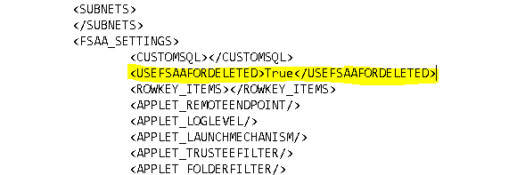

Summary: FSAA | Folders not marked as deleted
Issue: Summary: FSAA | Folders not marked as deleted
Before Fix: Deleted Resources discovered in FSAC scans will cause them to be come not marked as deleted in Tier 1.
After fix: Add hidden XML option to always use FSAA for marking resources as deleted. See Comments for more details.
Submitted by
Michael Burrofato
Affected Versions:
8.0
Affected Module:
SA - DC - FSAA
Dev Ticket:
- SAFS-806
- DCFSAA.dll 8.0.852
- FSAASrv.dll 8.0.852
- StealthAUDITRPC.exe 8.0.96
- StealthAUDITRPCClient.dll 8.0.96
- FSAAConfig.xml
- SATagParser.dll 8.0.13
Hotfix
YouTrack/Escalations
- SAFS-806/Escalation 8057, 7822, 29158, 29216
Customers
- Westfield Insurance Companies (Ohio Farmers)
- ANZ
- HPS Investment Partners
- Meggitt SA
Cumulative List of fixes included since Service Pack:
- SAFS-1582 9969 - FSAA | Timeout while compressing SQLites on proxy
- SAFS-2324 Investigate FSAA functionality when there is lack of access to IPC$
- SAFS-2359 16217 - Error Getting Activity Count from TBL_FSAC_ActivityEvents: Overflow while converting variant of type (OleStr) into type (Integer)
- SAFS-2442 - DFS Scan: Error during processing: cannot DETACH database within transaction[0x0001] DETACH DATABASE Struc
- SAFS-2411 16651 - FS_Migration Finishes with Success but doesn't Add USN Column to Activity Tier 2
- SAFS-2364 12262 - FSAA | Do not overwrite trace.log files
- SAFS-2515 FSAC: Scan is throwing an error "Buffer too small'"
- SAFS-2490 17161 - FSAC collection stuck in loop
- SAFS-2518 FSAC: Not returning full data when parsing huge zipped file
- SAFS-2574 FSAA: FSAC scan parses local sa console logs instead of windows cluster node
- SAFS-2571 FSAC: Scan should show percentage value as a scan status.
- SAFS-2626 : Cache was not properly handling files/folders with same names in same parent folder (can happen from deletion/recreation)
- SAFS-2559: 17476 - FSAC eM is not valid integer error
- SAFS-2739: 19535 - Update FSAC to collect log files without BOMs
- SAFS-2767 NFS scans aren't picking up files
- SAFS-2743 DFS listing wrong active link
- SAFS-2628 18381 - Server Scan file doesn't upload to the console.
- SAFS-2777 20796 - FSAA | Error when checking for active sessions on proxy
- SAFS-2837 19948 - DFS: Unique Key violation
- SAFS-2698 19491 - FSAA not traversing mounted volumes
- SAFS-2922 Update FSAAConfig.xml to properly handle list permissions
- SAFS-2736 20328 - FSAC System scan does not collect all events
- SAFS-2809 20970 - INSERT statement conflicted with the FOREIGN KEY constraint "FK_SA_FSAC_ActivityEvents_New_PathID"
- SAFS-2205 13113 - Detect and throw an error when an invalid share (e.g., one with a backslash) is detected
- SAFS-2329 16097 - FSAA | DFS Uses NTDomainName instead of FQDN
- SAFS-3020 FSAC: Offset value not resetting when scanning a new log for same day
- SAFS-2762 SDD | Enhance to retain LastAccessTime
- SAFS-3003 FSAA: Utilize Restore privileges when preserving LAT
- SAFS-2986 21818 - Migration OOM / Duplicate Column GatesProxyID
- SAFS-3026 22073 - FSAA | FKCV Errors After Applying Hotfix
- SAFS-14532 Make "Force preservation" option hidden by default
- SAFS-14541 Remove Description in FSAAConfig.xml
- SMPC-3911 Update SEEK Components to accept all configuration settings
- SAFS-14573 22741 - FSAA Migration Query 7.2 to 8.0 Duplicate Column Error
- SAFS-2705 15281 - FSAA unspecified error
- SAFS-3056 Add automatic procdump functionality for FSAA applet
- SAFS-14593 Update bulk import to not delete Activity and DLPEX tier 2 dbs.
- SAFS-14598 22741 - FSAA Migration Query 7.2 to 8.0 Could not convert variant of type (Null) into type (Integer)
- SAFS-2707 19757 - FSAC Bulk Import Rollback Due to Unspecified Error
- SAFS-14566 Update FSAA to pass parameters to SDD
- SAFS-14672 FSAC Access Violation on scans
- SAFS-14694 23344 - TFSAAAppletObjectProcessor.GetScanDatabaseFromExecHostWithRetry "Error downloading scan database from exec host
- SAFS-14702 22116 - Do Not Delete Activity Data Automatically (7.2 and 8.0 Implementation)
- SAFS-14688 Applet log level of "None" sends all log messages to StealthAUDITRPC.exe trace log file
- SAFS-2771 20689 - Error during storing DailyActivity: '' is not a valid integer value
- SAFS-14656 23094 - Strip trailing spaces from shares' landing folders
- SAFS-2957 21750 - FSAA | Skip IPC$ check in applet mode
- SAFS-14607 22956/23113 - Waiting for Parser Queue to be Empty
- SAFS-14809 Automatic procdump functionality in FSAA applet can cause access violations after scan completes
- SAFS-14597 Add RPC_IF_ALLOW_CALLBACKS_WITH_NO_AUTH and auth callback even if not using secure RPC to permit working with RestrictRemoteClients=1
- SAFS-14803 FSAC: Add option of maximum size of activity to scan at once
- SAFS-14800 23738 - SDD Scoping to folders: Added a warning log message if the ScanResourceFilter option is using the unsupported target "Resource"
- SAFS-2692 19369/19531 - FSAA | Shares Marked as Deleted When Access to Enumerate Shares is Revoked
- SAFS-14824 20963 - FSAA Failed to Copy Tier 2: Prop DB was being compressed during non-permission scans
- SAFS-14888 24391 - Foreign Key Constraint Violation
- SAFS-14791 Change FSAA/FSAC to create SQLite temporary files in FSAA folder
- SAFS-14485 18434: FSAC Support milliseconds in event timestamps
- SAFS-14996 24391 - Foreign Key Constraint Violation
- SAFS-14993 24957 - Migration Error for Hosts that aren't in Tier 1
- SAFS-15107 24391 - Primary Key Constraint Violation
- SAFS-15094 25530 - Metadata information corrupted
Fixes since last hotfix:
- SAFS-15136 25760 - FSAA | Make Delete Host query more fault tolerant
- SAFS-15217 26234 -FSAA | Remove RPC dependency for data deletion query
- SAFS-15270 Remove Host Query: Delete StrucMap prior to removing data in tier 1.
- SAFS-15274 Update Host Removal query to rename host to a fixed size
- SAFS-1643 11296 - Improve error logging for FSAA Proxy scanning
- SAFS-15295 Building DLP Patterns Takes Too Long
- SAFS-15388 FSAA/SDD: Performance bug limits scan performance
- SAFS-15353 27010 - FSAA | Error "Invalid discretionary access control list on security descriptor" when security descriptor has no DACL
- SAFS-806 FSAA | Folders not marked as deleted
Comments:
THIS HOTFIX REQUIRES AT LEAST HOTFIX SDD_8.0_006 TO BE INSTALLED IF USING SDD.
https://na55.salesforce.com/articles/General/Hotfix-SDD-8-0-006
The following fix requires the Job XML for ALL FSAA scans and bulk import jobs (permissions, activity, and Sensitive Data) to be manually modified. See screenshot below for the syntax required.

ADDITIONAL STEPS IF YOU HAVE DELETED RESOURCES NOT MARKED AS DELETED IN TIER 1
- Drop the contents located in the FSAA folder of this hotfix into the FSAA folder of your local SA Console.
- Open an elevated command prompt and change directory to FSAA folder.
2) To update a single host: FSAAUpdateDeletedUSN.exe
- Run FSAA permission bulk import against the affected hosts.
Instructions:
- Unblock the hotfix zip file in the windows property dialog, if an unblock button exists there.
- Close all instances of StealthAUDIT (check task manager under processes for all users)
- Update all DC files in your %SAInstallDir%DC folder
- Update all PrivateAssemblies in your %SAInstallDir%PrivateAssemblies folder.
- Launch StealthAUDIT. Run the 'Update Proxy Service' query under the Maintenance tab in the FSAA data collector against your proxy servers (if running proxy service).
Product: StealthAUDIT
Module: SA - DC - FSAA - Activity;SA - DC - FSAA - DFS;SA - DC - FSAA - Permissions
Versions: 8.0
Dev Ticket: SAFS-806
Resolved In: - DCFSAA.dll 8.0.852
- FSAASrv.dll 8.0.852
Other dependencies included:
- StealthAUDITRPC.exe 8.0.96
- StealthAUDITRPCClient.dll 8.0.96
- FSAAConfig.xml
- SATagParser.dll 8.0.13
Salesforce Article ID: 2175